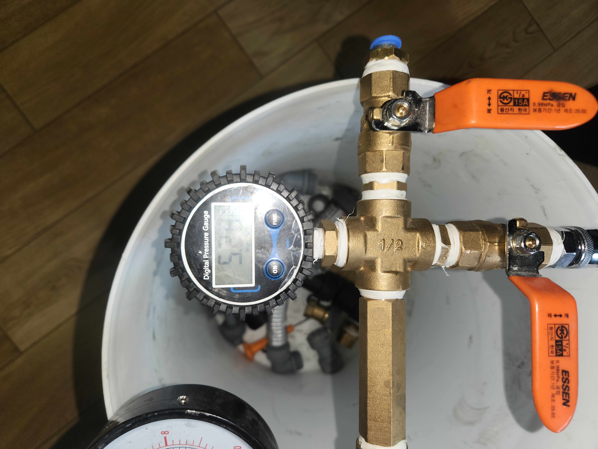
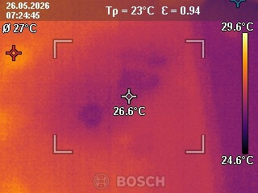

수도 요금이 늘었는데 겉으로는 별다른 흔적이 안 보인다는 문의를 받고 출동한 현장입니다.
먼저 배관에 공압검사를 진행했습니다. 배관 내부에 일정한 압력의 공기를 주입한 뒤 압력게이지로 압력이 유지되는지를 관찰하는 방법인데, 게이지 수치가 시간이 지날수록 조금씩 떨어지는 것을 확인해 배관 내부에 누수가 있다는 것을 먼저 확인했습니다. 이어서 실내열화상 카메라로 벽과 바닥의 온도 분포를 촬영했습니다. 온수 배관에서 물이 새고 있으면 주변보다 온도가 미세하게 높게 나타나는데, 촬영한 이미지에서도 특정 구간의 온도가 주변보다 높게 표시되는 것을 확인했습니다.
공압검사로 누수 여부를, 열화상검사로 대략적인 위치까지 교차 확인한 뒤, 필요한 최소 구간만 개방해 정확한 지점을 찾아 조치했습니다.
수도 요금만 늘고 눈에 보이는 누수 흔적이 없을 때는 이렇게 장비를 활용한 정밀 진단이 꼭 필요합니다. 육안으로 확인이 안 된다고 방치하지 마시고 정확한 검사를 먼저 받아보시길 권해드립니다.
비슷한 증상으로 문의하실 곳을 찾고 계신다면 전화로 접수해 주세요. 접수 건은 확인 후 신속하게 연결해 안내해 드리며, 현장 진단 후 견적에 동의하신 뒤에만 작업이 진행됩니다.